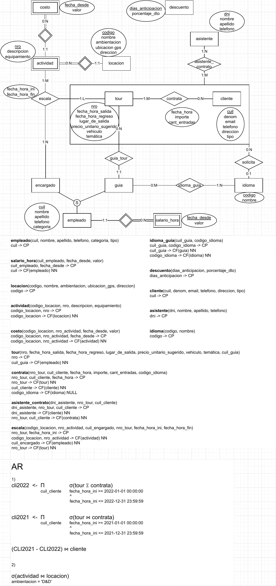

Role Play
1° parcial, 2022
Enunciado
Evaluación de Modelos de Datos y Álgebra Relacional
Modelos de Datos
- a) (4,5 puntos) Esquematice el modelo E-R que se deriva de la narrativa.
- b) (4,5 puntos) Transforme el modelo E-R en un Modelo Relacional (pasaje a tablas), indicando los atributos de cada tabla indicando aquellos que pueden admitir valores nulos, indique las claves primarias y foráneas, en estas últimas indique, cuando se requiera, si admiten o no valores nulos.
Operaciones del Álgebra Relacional
- c) (1 punto) Desarrolle las operaciones en Álgebra relacional de los Requerimientos planteados. La empresa de turismo Ainz Ooal Gown está desarrollando turismo de role play, enfocados en generar recreaciones de lugares famosos de películas, series, anime, videojuegos, etc., y creando salidas grupales que recorren varias locaciones de interés ambientadas acorde al tour.
La empresa nos contactó para confeccionar un sistema que permita organizar el trabajo de planeación y venta de pasajes para dichas salidas.
La empresa cuenta con varias locaciones(1) donde se definen actividades(2) a realizar por ejemplo Great Tomb of Nazarick Raid y Battle of Carmen Village, Almuerzo en la cantina de Mos Eisley y Presentar tributo a Java. La empresa cuenta con empleados(4) que pueden desempeñar varias funciones que se requieren para su organización.
Cuando la empresa organiza un tour(6) se deciden las actividades(2) que se realizarán y el/los encargados(8) de la coordinación de dichas actividades, definiendo así cada escala(7).
Una vez registrado un tour, se publicita para que los clientes(10) puedan contratarlo(11). Para poder completar la organización del tour, cada cliente debe presentar, con un plazo máximo de 10 días antes de la fecha de salida, la información de los asistentes(13) en función de la cantidad de entradas contratadas. Cerca de la fecha de salida del tour, según la cantidad de asistentes se decide el vehículo a usar y registra la patente.
Reglas de Negocio
- Las locaciones se identifican por un código único, tienen un nombre y se registran además la ambientación (D&D, Star Wars, Shingeki no Kyojin, LFN, etc), la ubicación GPS (latitud y longitud) y la dirección.
- Las actividades dependen de la locación y se numeran secuencialmente dentro de la locación donde se realizan. De las mismas se debe registrar una descripción y el equipamiento necesario para realizar la actividad.
- Las actividades tienen un costo que varía en el tiempo y es de interés para la empresa llevar un registro histórico de los mismos.
- Los empleados se identifican por su cuil y de ellos se necesita conocer nombre, apellido, teléfono y descripción de categoría (trainee, jr, ssr, sr, etc). Estos empleados realizan diferentes funciones, siendo importante identificar los empleados que realizan las funciones de guía(7) y de encargado(8).
- Cada empleado cuenta con un salario por hora que varía en el tiempo y se requiere un histórico del mismo.
- Los tours se identifican con un número de tour y se debe registrar, temática, fecha y hora de salida, lugar de salida, fecha y hora de regreso, precio unitario sugerido. Al tour se le asigna un guía(8) para la coordinación y deben definirse las escalas(7) para completar su registro.
- Para cada escala definida (el tour(6) con sus actividades(2) y el/los encargado/s(9) de las mismas), se registran la fecha y hora de inicio y fin de la misma.
- La coordinación del tour queda siempre a cargo de un único empleado, el mismo será para ese tour el guía. Para ser un guía un empleado debe hablar al menos un idioma(14) extranjero y tener mucho conocimiento de la temática del tour. Un guía puede también ser encargado(9) o realizar otras funciones en la empresa.
- Para que las actividades se desarrollen de forma satisfactoria en el tour, se asignan uno o más empleados que realizan la función de encargado. Por ejemplo en caso de actividades recreativas deberá encargarse del equipamiento necesario, explicar y asistir a los asistentes así como de resolver cualquier inconveniente, y para actividades como almuerzo u hospedaje el encargado es responsable de la contratación de todos los servicios (comida, hotel, etc.). Un encargado puede encargarse de varias actividades en el mismo o en distintos tours y una actividad puede ser encargada a uno o varios encargados para un mismo tour. Las actividades se pueden repetir en el mismo tour en distintas fechas
- Los clientes se identifican por su cuil/cuit y se registra de los mismos el tipo (particular, empresa de turismo, revendedor, etc), denominación (nombre y apellido para particulares, razón social para empresas), email, teléfono y dirección.
- Al contratar un tour se registra el cliente, la cantidad de entradas que adquiere para el tour y se calcula el precio total que será el precio unitario sugerido (del tour) * cantidad entradas - descuento(12) (si aplica). Cuando un cliente contrata el tour además es posible que solicite se realice la guía con un idioma(14) distinto al español. Esto deberá ser registrado. Por cada tour contratado cada cliente podrá solicitar como máximo un único idioma14 adicional, lo pueden solicitar luego de contratar el tour (hasta 10 dias antes de la fecha de salida). El sistema registra la fecha y hora de la venta.
- La empresa ofrece descuentos por contratación anticipada para todos los tours por igual por ejemplo con 30 días de anticipación 10%, con 90 días de anticipación 25%. Los mismos pueden cambiar y agregar nuevos pero no es necesario llevar un histórico, sólo es necesario conocer los descuentos actuales para cada cantidad de días de anticipación.
- Los asistentes son las personas que realizan el tour. Por cada entrada contratada por el cliente debe informar los datos de cada asistente, informando: dni, nombre, apellido y teléfono. Si el asistente ya está registrado por haber participado de algún otro tour solo se verifican los datos y se lo asocia al tour, no se requiere volver a registrarlo.
- Los idiomas están codificados y poseen una descripción
Requerimientos de información
- Listar los clientes que contrataron tours el año pasado pero no aún este año.
- Informar todas las actividades con ambientación D&D. Indicando los datos de locación y actividad.
Resolución
Ver la resolución: DER, pasaje a tablas y álgebra
Son las hojas originales. Tocá una para verla en grande.


¿Cómo te fue?
Marcá cada tema del examen.
- DERDe la narrativa al DER, en 1° parcial
- PasajePasaje a tablas, en 1° parcial
- ÁlgebraÁlgebra relacional, en 1° parcial